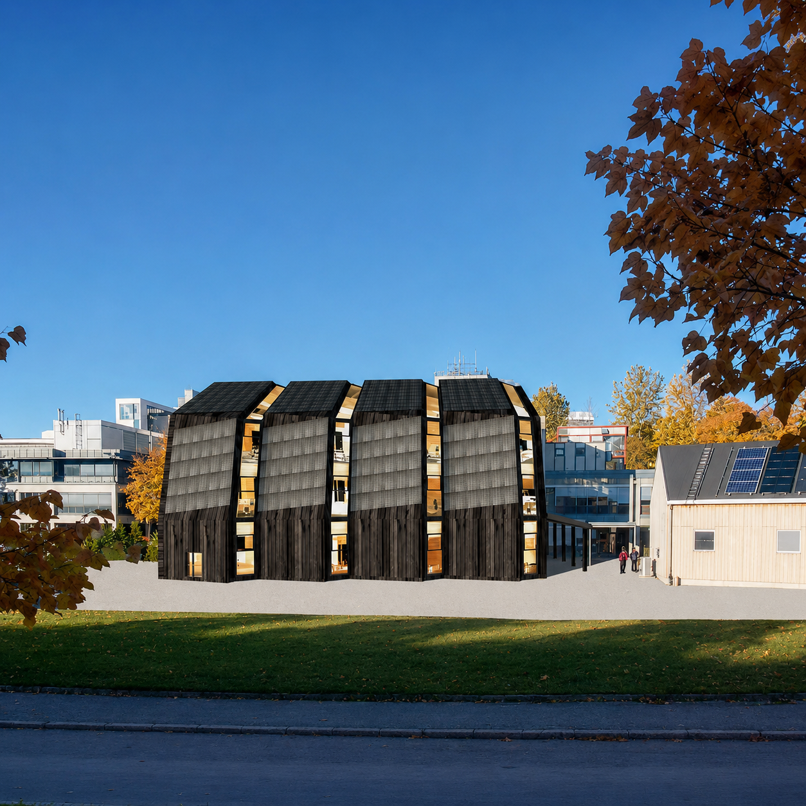

Add your image here'"/>The ZEB Flexibility Lab project focused on developing a zero-emission building through an integrated design process combining architecture, engineering, and environmental simulation. The objective was to achieve a ZEB-COM standard, balancing operational and embodied energy emissions while creating a comfortable and flexible research environment.
The project explored how passive strategies, thermal optimisation, and on-site renewable energy production could collectively support a self-sufficient energy system. Key drivers of energy use — particularly heating and ventilation — were addressed through a high-performance thermal envelope, hybrid ventilation, and geothermal heat pump systems. These were complemented by photovoltaic panels integrated into the building façade, enabling on-site renewable generation.
Throughout the design process, iterative computer simulations guided the evolution of the building's form, structure, and envelope performance. My contributions included site analysis, architectural concept development, spatial organisation, furniture layout, 3D modelling, renderings, and graphic representation.
The resulting design demonstrates how energy efficiency and spatial flexibility can coexist within a coherent architectural language. The ZEB Flexibility Lab stands as a model for research-driven sustainable architecture, where technological innovation is balanced with a human-centred spatial experience.